Analogia. Posts fixados são a vitrine da loja. Quem passa na calçada lê só isso. A vitrine agora fala o que o restaurante tem no pacote e o que a comunidade faz na mesa — não o preço da inscrição.
ANTES (26 ago) AGORA (29 ago)
$900 to join The restaurant benefit
Restaurant fee Window + kit + community
How it works = preço Quem somos + para quem é
+ Emerson
| Sai | Entra | |
|---|---|---|
| Restaurante | $900 | Janela de 2 semanas, kit (banner, QR, PR) e papel de parceiro da escola da esquina |
| Comunidade | — | 20% do prato promo vai restaurante → PTA. Famílias jantam. Escola está na mesa. |
| Escola | $0 (fica) | $0. Sem catálogo. Sem pickup. |
1 · Who we are — 5 slides
{kind=link}
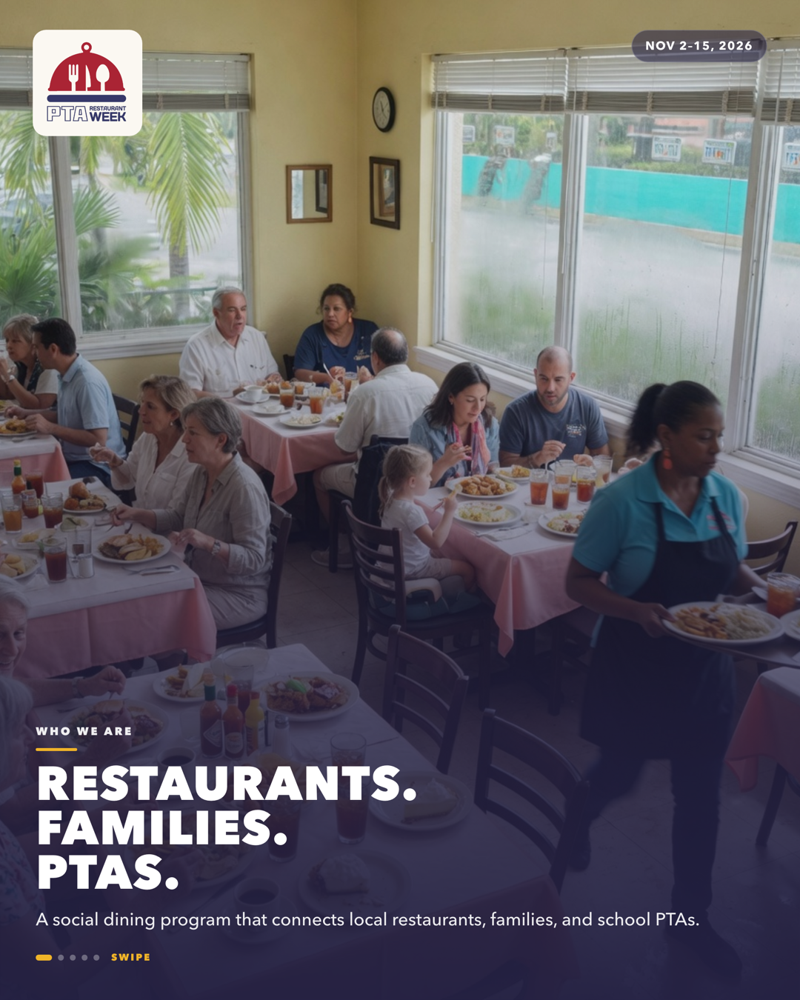
{kind=link}
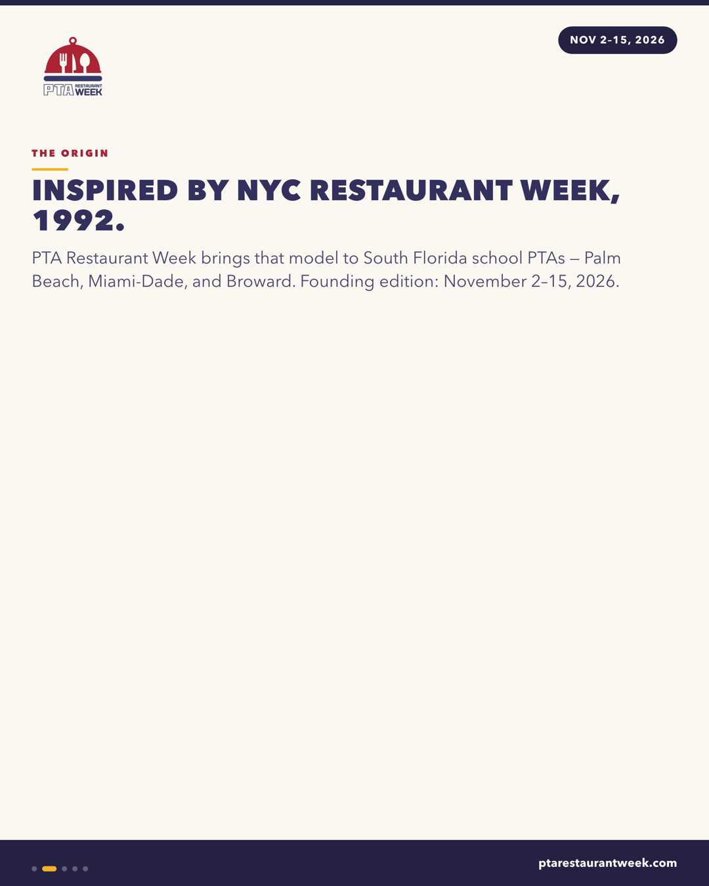
{kind=link}
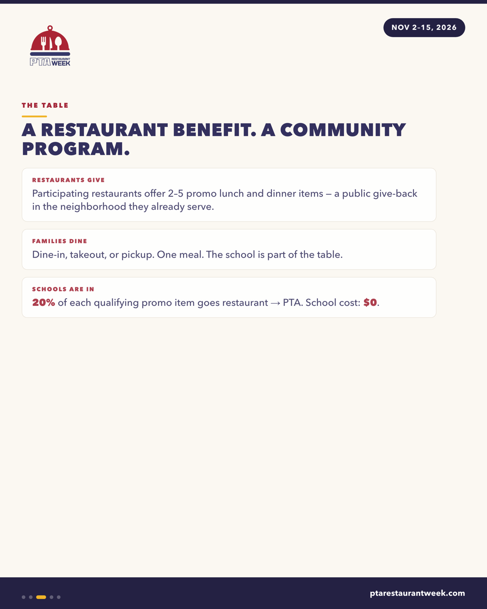
{kind=link}
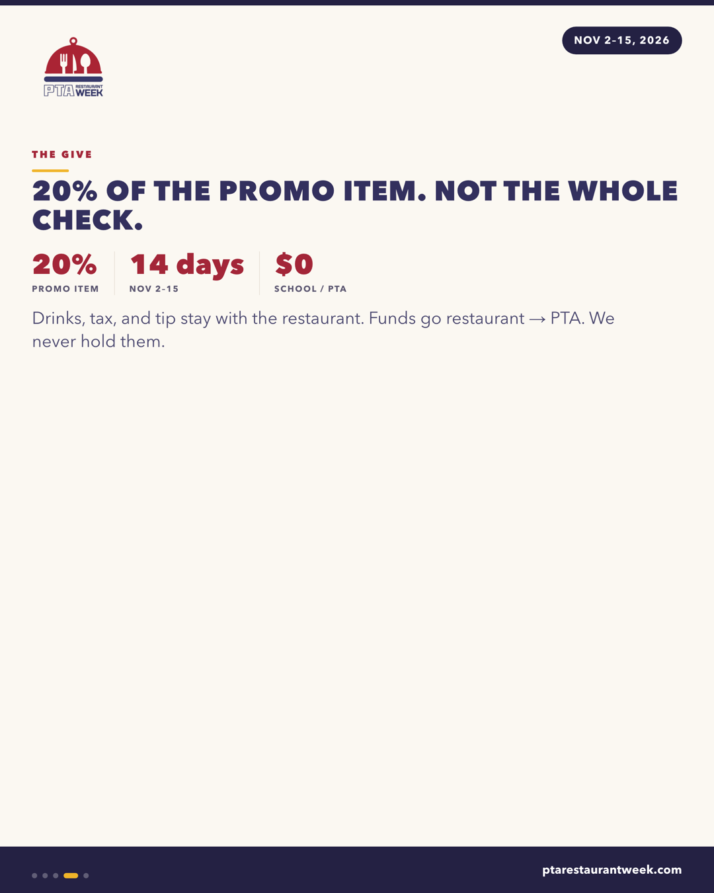
{kind=link}
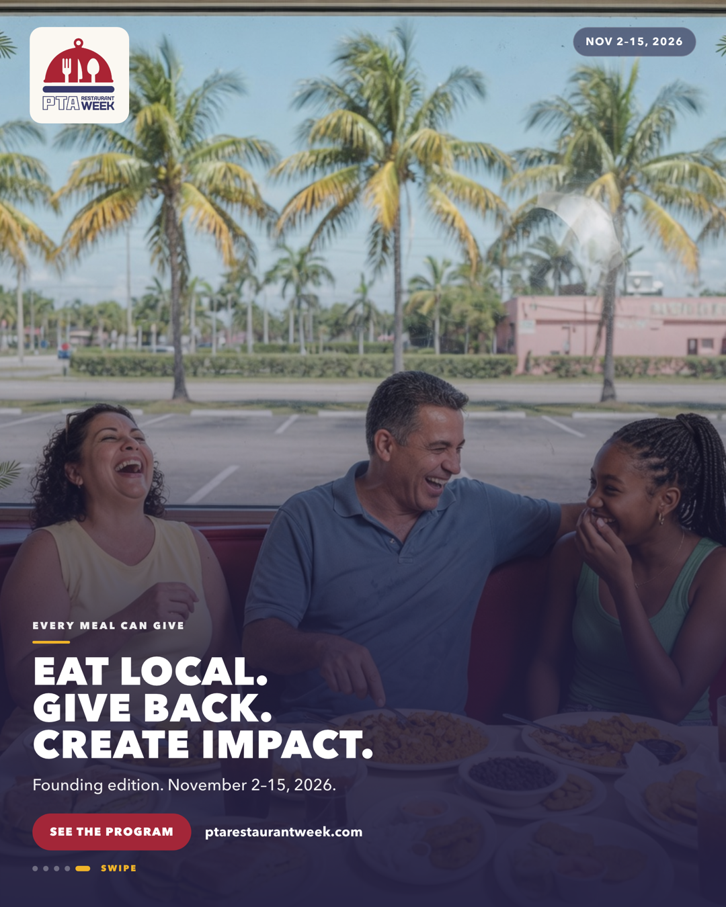
2 · Who it’s for — 5 slides
{kind=link}
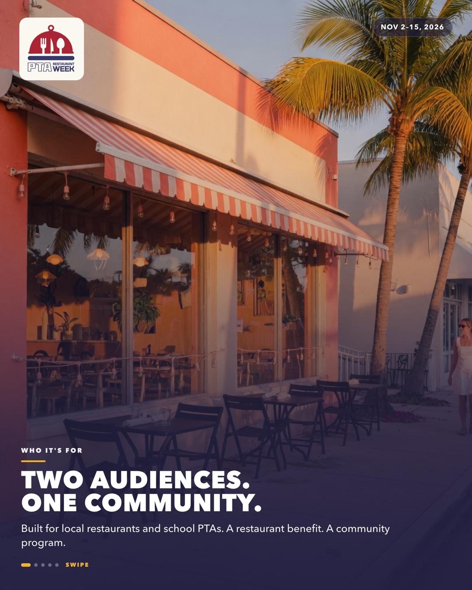
{kind=link}
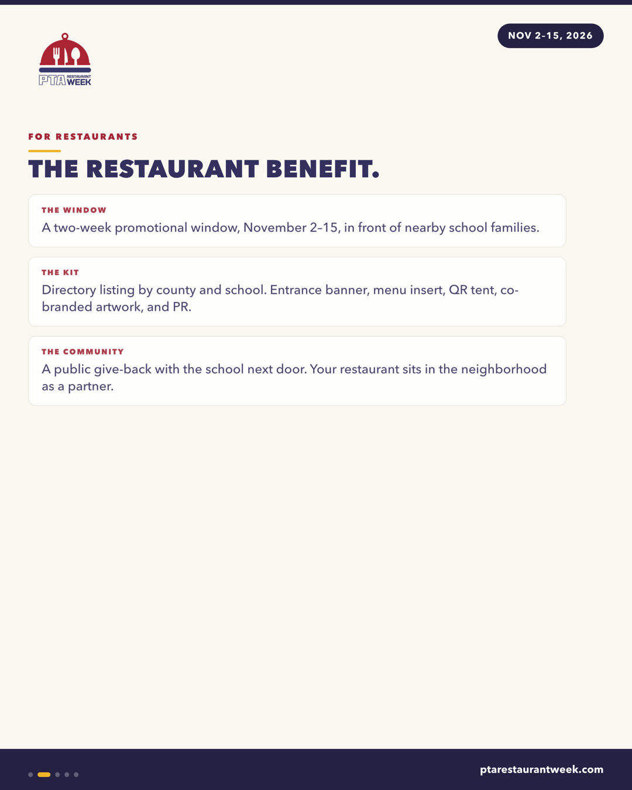
{kind=link}
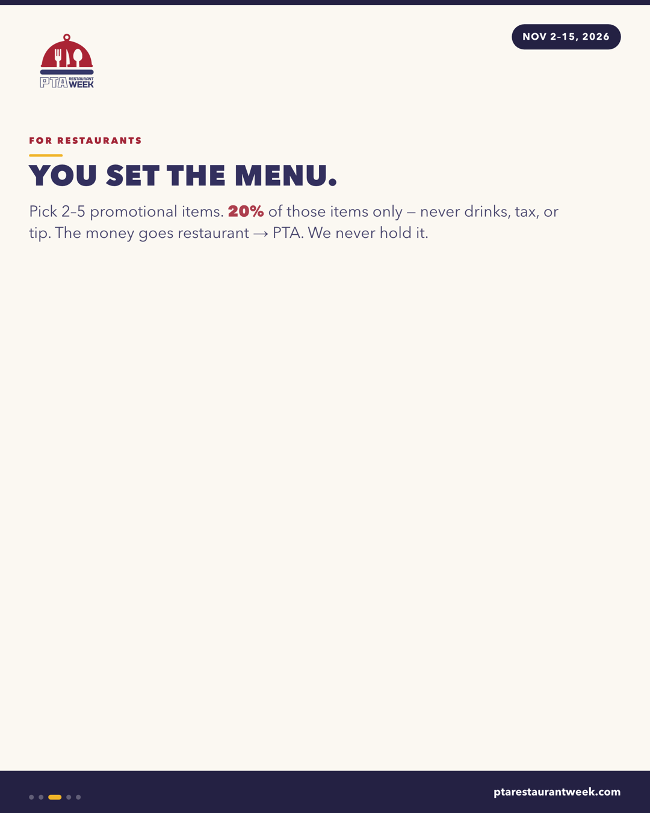
{kind=link}
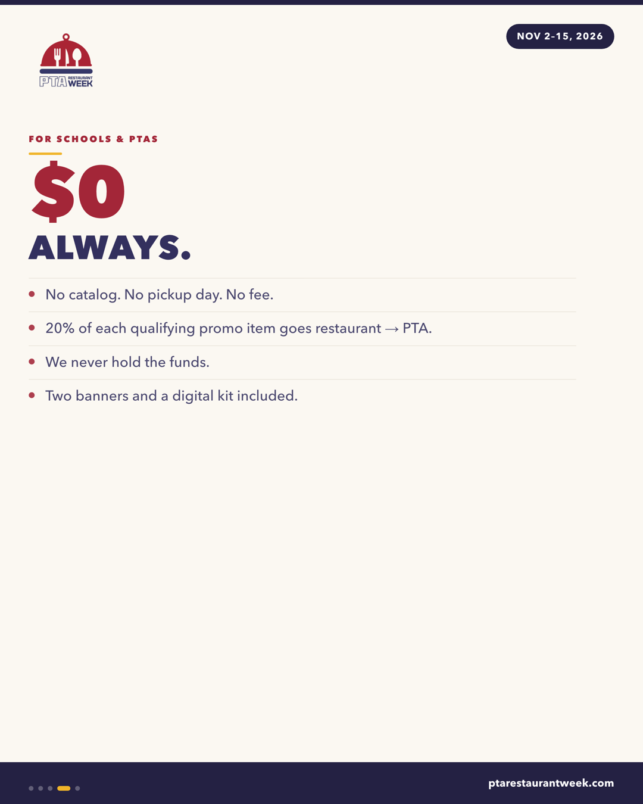
{kind=link}
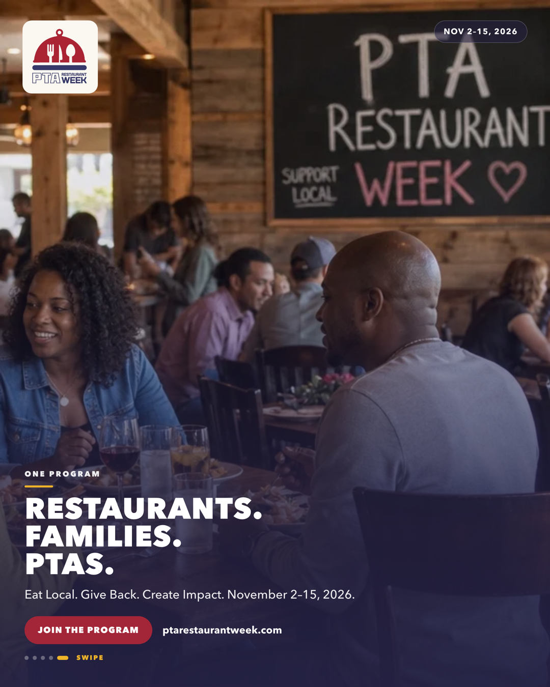
3 · Who’s behind — Emerson, 3 slides
{kind=link}
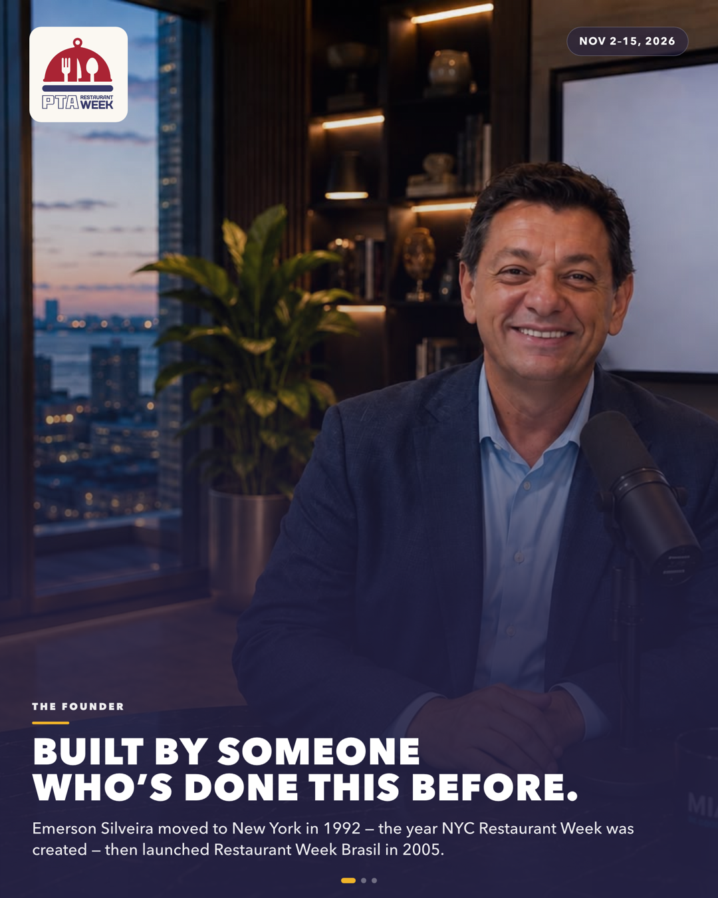
{kind=link}
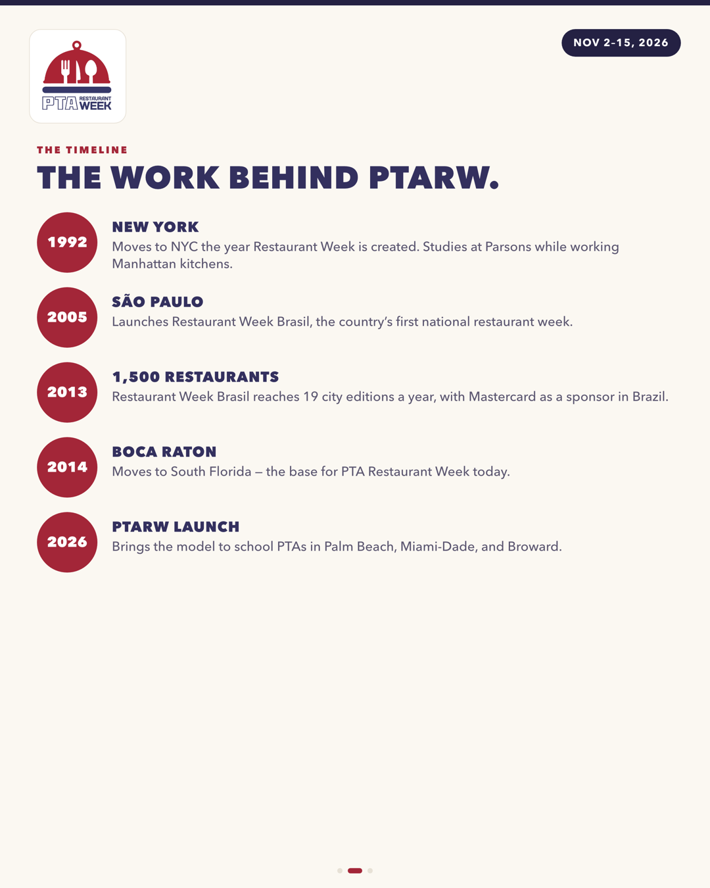
{kind=link}
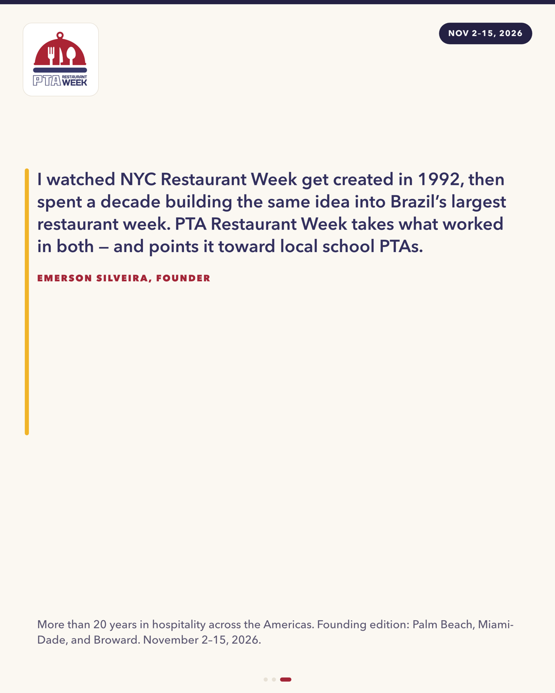
13 artes · 3 legendas · $900 fora de cada slide e de cada caption.
O que você precisa fazer
- Abra esta página no celular e passe os 3 carrosséis.
- Se estiver ok: pasta PTARW-para-WhatsApp na Mesa → mande cada ZIP como documento.
- No Instagram, pinar na ordem 1 → 2 → 3. Formato feed.